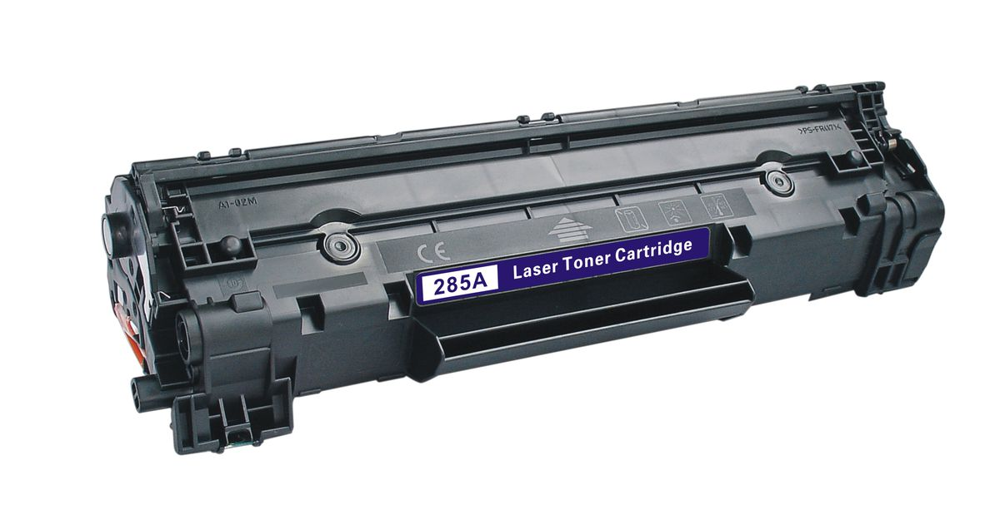
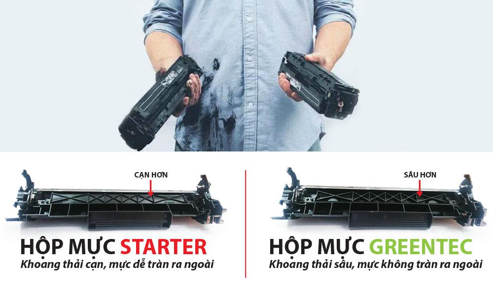
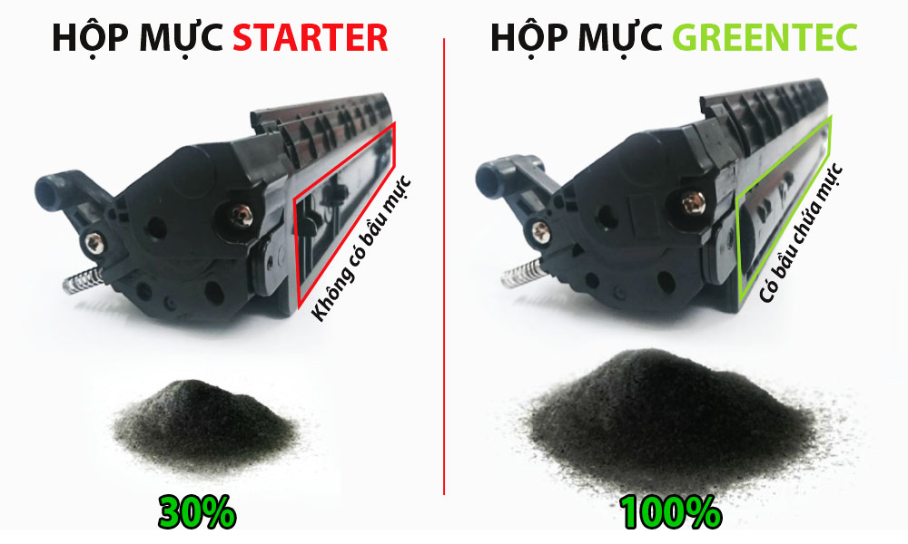

Hộp mực In thử – Hộp mực STARTER là gì?

Hộp mực in thử là hộp mực đầu tiên được Nhà sản xuất “tặng” kèm theo máy. Chúng tôi dùng từ tặng trong ngoặc kép là vì trước đây hộp mực đi kèm theo máy vẫn giống như những hộp mực mua rời, nhưng gần đây, các hãng sản xuất máy in đã thay đổi toàn bộ cấu trúc hộp mực theo máy, khoang mực demo chỉ bằng 30% so với hộp mực mua rời, linh kiện bên trong hộp mực demo cũng chỉ cho phép sử dụng hết lượng mực kèm theo là hết “khả năng sử dụng”!
Ngày nay, ngành công nghệ tái chế mực in phát triển rất mạnh mẽ, nhất là mảng mực in laser. Sản phẩm mực in tái chế cũng không thua kém gì nhiều so với mực OEM, nếu như bạn chỉ dùng in văn bản thông thường, hoặc những hình ảnh không đòi hỏi chất lượng quá cao. Chính vì thế các hãng máy in cũng thất thoát một phần thị phần cho mãng mực in này. Vì lẽ đó chính sách mực in kèm theo máy của các nhà sản xuất gốc OEM ngày nay cũng thay đổi. Dưới đây chúng tôi sẽ đưa ra cho các bạn thấy những hạn chế của hộp mực demo
1. Khoang chứa mực thải chỉ bằng 30%

Hộp mực demo là hộp mực đầu tiên được Nhà sản xuất “tặng” kèm theo máy. Chúng tôi dùng từ tặng trong ngoặc kép là vì trước đây hộp mực đi kèm theo máy vẫn giống như những hộp mực mua rời, nhưng gần đây, các hãng sản xuất máy in đã thay đổi toàn bộ cấu trúc hộp mực theo máy, khoang mực demo chỉ bằng 30% so với hộp mực mua rời, linh kiện bên trong hộp mực demo cũng chỉ cho phép sử dụng hết lượng mực kèm theo là hết “khả năng sử dụng”!
2. Khoang chứa mực chỉ bằng 30%

Hộp mực in thử là hộp mực đầu tiên được Nhà sản xuất “tặng” kèm theo máy. Chúng tôi dùng từ tặng trong ngoặc kép là vì trước đây hộp mực đi kèm theo máy vẫn giống như những hộp mực mua rời, nhưng gần đây, các hãng sản xuất máy in đã thay đổi toàn bộ cấu trúc hộp mực theo máy, khoang mực demo chỉ bằng 30% so với hộp mực mua rời, linh kiện bên trong hộp mực demo cũng chỉ cho phép sử dụng hết lượng mực kèm theo là hết “khả năng sử dụng”!
3. Linh kiện được thiết kế chống nạp lại
Linh kiện bên trong máy cũng được cố tình thiết kế chống nạp lại, thường thì khi nạp lại cho ra bản in rất mờ, nếu muốn tận dụng lại hộp mực, những đơn vị nạp mực buộc phải thay drum thậm chí là phải thay cả cặp gạt lớn và nhỏ tùy theo dòng máy. Chi phí cho việc thay thế cây drum là 150.000đ, cặp gạt là 100.000đ, cộng với chi phí nạp mực thêm là 80.000đ nữa, vậy tổng chi phí để sử dụng lại hộp mực phải mất đến hơn 300.000đ. Nhưng điều trớ trêu là bạn cũng chỉ sử dụng được 30% lượng mực trong mà thôi, vì khoang thải quá nhỏ, nên bạn chỉ xài 30% là bị tràn khoang mực không thể sử dụng tiếp được!
Hiện nay trên thị trường không có loại mực nạp nào sử dụng lại được linh kiện của hộp mực in thử mà cho chất lượng ổn định. Vì vậy lời khuyên của chúng tôi là bạn không nên luyến tiếc hộp mực in thử, vì chính hãng sản xuất đã cố tình chống nạp thì việc cố tình tận dụng lại tốn rất nhiều chi phí.
Một lựa chọn khác là bạn nên mua hộp mực in tương thích với chất lượng tương đương, đầy đủ số trang in mà còn có thể nạp lại được với chất lượng ổn định.
Cần nạp mực hoặc sửa máy in tận nơi? Mực In Trường Phát có mặt trong 30 phút tại TP.HCM — in test trước khi tính tiền, bảo hành 1 tháng.
0908.327.123 · 0819.007.394 (Zalo cả 2 số)